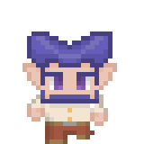
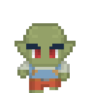
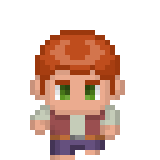
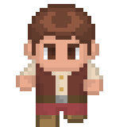
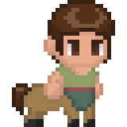

Povo Fera
Foram criados pelos Aboleth muitos séculos atrás, hoje vivem livres pelo mundo, são encontrados com mais frequência em Koba, mas são quase tão numerosos quanto os humanos
Foram criados pelos Aboleth muitos séculos atrás, hoje vivem livres pelo mundo, são encontrados com mais frequência em Koba, mas são quase tão numerosos quanto os humanos

O Povo Élfico veio de Arcadia há milhares de anos e estabeleceram reinos prósperos em Rhaokar

Recém chegados de Arcadia, onde são a maior parte do povo das Cortes da Primavera e do Verão
Os Gnomos, assim como os Goblins, são recém chegados do mundo das fadas, ainda preservando muitas de duas tradições e até mesmo o Tipo

Divididos entre os Goblins, cidadãos de arcadia e membros das Cortes do Inverno e do Outono, e os membros da Corte da Escuridão, os Hobgoblins e Bugbears
Os Goblins, São recém chegados a Rhaokar, junto com os Gnomos, seu tipo é Fada
Os Hobgoblins e os Bugbears não tem diferenças estatísticas, são residentes dos dominios da Mão do Aqueronte, os Hobgoblins são os Daimios e samurais, e os Bugbears são assassinos

Vindos das "Estradas da Vida", halflings chegaram recentemente a Rhaokar, tendo surgido a tão pouco tempo, são raros e não de filiam a reino nenhum, vivendo em caravanas etinerantes
Os Halflings, não foram criados por nenhuma divindade, eles apenas apareceram no mundo, vindos "das estradas da vida" como eles mesmos dizem

Criados originalmente como escravos para os Aboleth, os humanos se libertaram e deixaram o plano milhares de anos no passado, novamente como refugiados alguns séculos antes da Guerra de Thoon
Os humanos, chegaram em Rhaokar novamente vindos de outros planos, mas rapidamente se tornaram uma das raças mais comuns, por viverem relativamente pouco e se reproduzirem rapidamente

Criados pelos mesmos magos que deram origem aos Minotauros, os Centauros foram feitos para serem mensageiros, se uniram a eles na rebelião e hoje são filosofos e professores em Demios

Descendentes de genios, anjos ou demonios, eles surgem esporadicamente em linhagens por todo o mundo e são, de forma geral, vistos como bençãos
Os Planares, Aasimar, Tieflings, Geniekin e qualquer um dos planetoucheds se encaixam nessa categoria e não diferem em nada em termos de regras.
Assim como os familiares, ninguém sabe ao certo como surgiram, acredita-se que sejam resultado de experiencias arcanas ou frutos de acidentes alquimicos
Outras raças que não foram descritas, serão analisadas caso a caso, mas, a princípio, são permitidas.